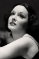
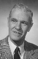
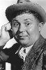
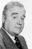

Country:United States, 69 minutes
Spoken languages:
Genres:Crime, Mystery
Director(s):Charles Barton
Writer(s):Sidney Salkow, George Harmon Coxe
Video Codec:Unknown
Number: 1756


Certification:
Storyline:
Suspected crime boss Nate Girard beats a murder rap, and newspaper photog Kent Murdock is on the story. Girard and lawyer Redfield throw a party for the news men where Murdock romances a mystery woman who confronted Girard in front of him, but Murdock's fiancée Hester shows up. After they return to his apartment, have a fight, and she leaves, the mystery woman slips in and begs for his help. Police Inspector Bacon and the cops show up, looking for the mystery woman; Murdock hides her. Murdock goes with the cops to discuss the murder the woman is suspected of. Bacon explains (in flashback) how some photogs were setting up a shot with Girard and Redfield. When the flashbulbs popped, Redfield keeled over dead and the woman, Meg Archer, fled while the newsmen ran out to phone their papers. The newsmen (who were rounded up later as thoroly as possible) are taken into police custody, except for Murdock (who wasn't at the scene), who is given a cap on the sly by rival McGoogin. Altho ...
Cast:    

Medium: Original DVD,
Comments: Part of: Mystery Classics - 50 Movie Pack
Loaned: No
Aspect ratio: Unknown